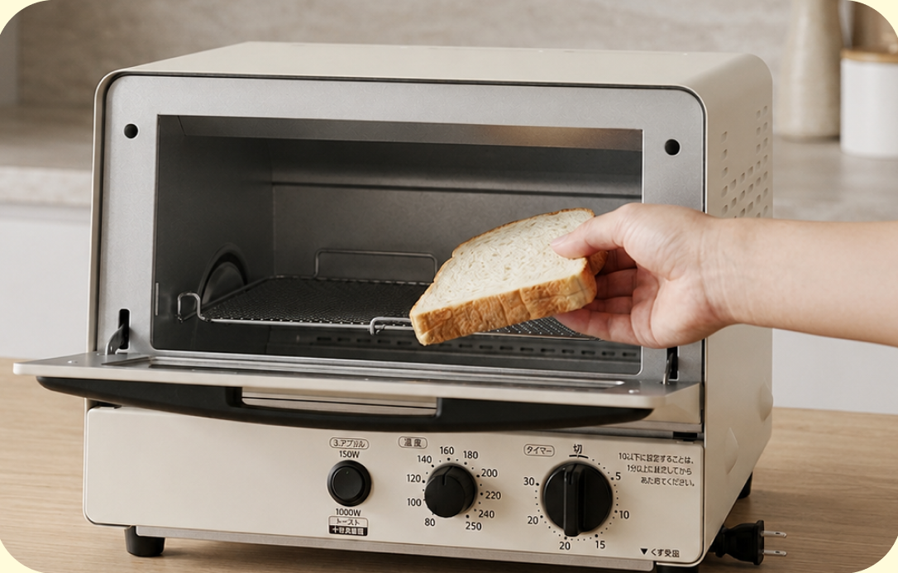
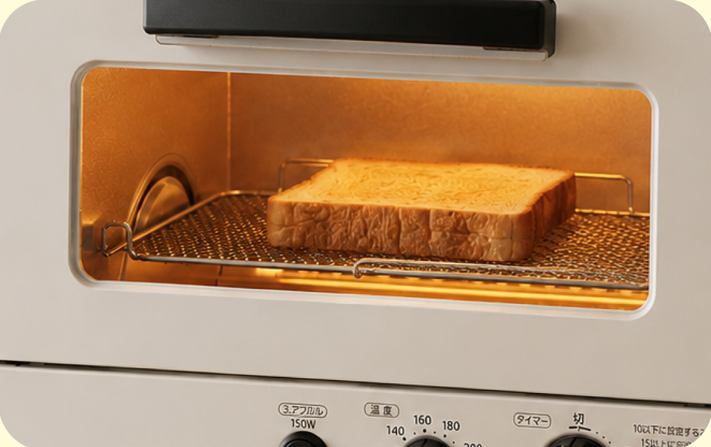
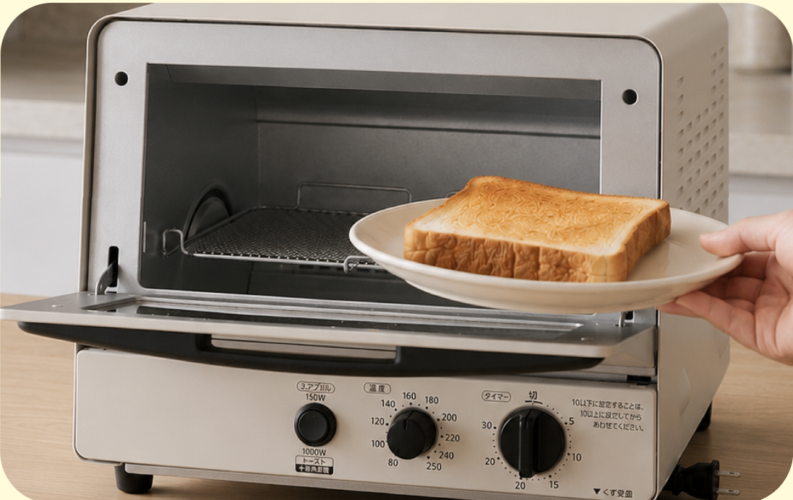
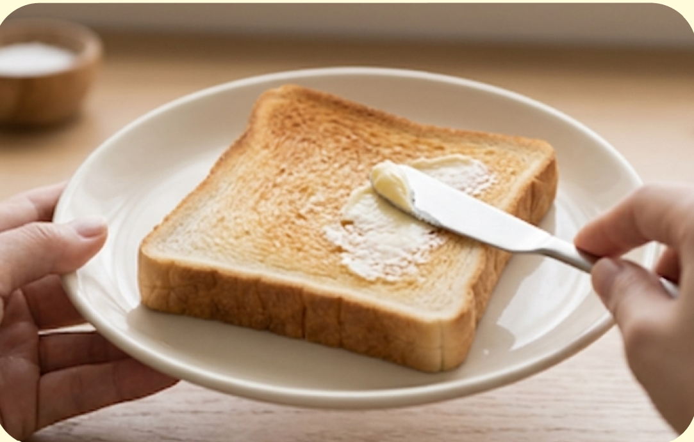
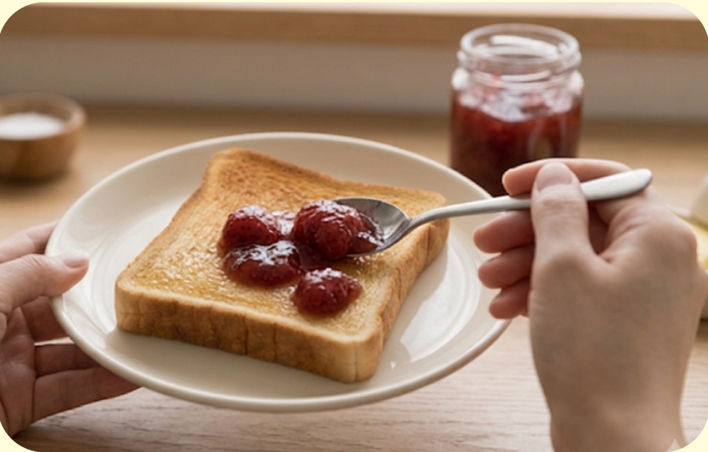

難易度１
★☆☆
材料（一人分）
- ・食パン １枚
- ・バター 5〜10g
必要な道具
- ・トースター
- ・バターナイフ
- ・お皿
注目ポイント
-
 焼き加減に注意
焼き加減に注意 -
 包丁を使わない
包丁を使わない - アレンジしても◎
作り方
① 食パンをトースターに入れます。

② 2〜4分ほど焼きます。 トースターによって焼き時間が異なります。

③ 焼けたらお皿にのせます。

④ 熱いうちにバターをのせ、 全体に広げます。

⑤ バターが溶けたら完成です。 お好みではちみつやジャムをのせても おいしく食べられます。

調理のコツ
トースターによって焼き時間が違います。
焦げないように、
最初は様子を見ながら焼きましょう。
困ったときは
Q. 焦げてしまった…
A. 焼き時間を短くして再挑戦しましょう。
Q. バターが溶けない…
A. 焼きたてのうちにのせるとよく溶けます。